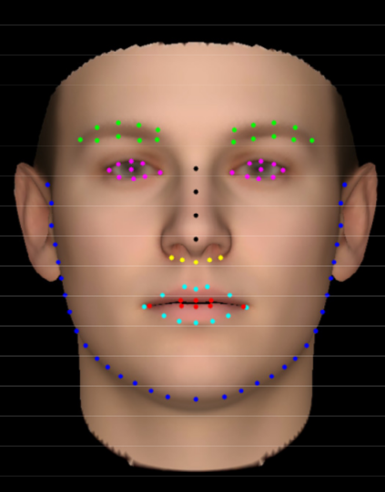

Look at Boundary: A Boundary-Aware Face Alignment Algorithm
Abstract
We present a novel boundary-aware face alignment algorithm by utilising boundary lines as the geometric structure of a human face to help facial landmark localisation. Unlike the conventional heatmap based method and regression based method, our approach derives face landmarks from boundary lines which remove the ambiguities in the landmark definition. Three questions are explored and answered by this work: 1. Why using boundary? 2. How to use boundary? 3. What is the relationship between boundary estimation and landmarks localisation? Our boundary-aware face alignment algorithm achieves 3.49% mean error on 300-W Fullset, which outperforms state-of-the-art methods by a large margin. Our method can also easily integrate information from other datasets. By utilising boundary information of 300-W dataset, our method achieves 3.92% mean error with 0.39% failure rate on COFW dataset, and 1.25% mean error on AFLW-Full dataset. Moreover, we propose a new dataset WFLW to unify training and testing across different factors, including poses, expressions, illuminations, makeups, occlusions, and blurriness.
Demo
Downloads
-

WFLW Dataset

Citation
@inproceedings{wayne2018look,
author = {Wu, Wayne and Qian, Chen and Yang, Shuo and Wang, Quan and Cai, Yici and Zhou, Qiang},
title = {Look at Boundary: A Boundary-Aware Face Alignment Algorithm},
booktitle = {CVPR},
month = June,
year = {2018}
}